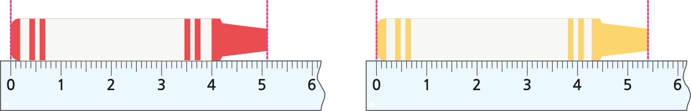

- 물음 1
- 물음 2
- 물음 3
-
빨간색 크레파스의 길이는 5 cm보다 몇 mm 더 긴가요?
작은 눈금이 1칸 더 가 있으므로 1 mm 더 깁니다. 따라서 빨간색 크레파스의 길이는 5 cm 1 mm로 나타낼 수 있습니다. -
빨간색 크레파스의 길이 몇 mm인가요?
작은 눈금이 51칸 있으므로 51 mm입니다. 따라서 빨간색 크레파스의 길이는 51 mm로 나타낼 수 있습니다. -
노란색 크레파스의 길이를 두 가지 방법으로 나타내 보세요.
노란색 크레파스의 길이는 5 cm보다 4 mm 더 긴 길이이고 54 mm입니다.